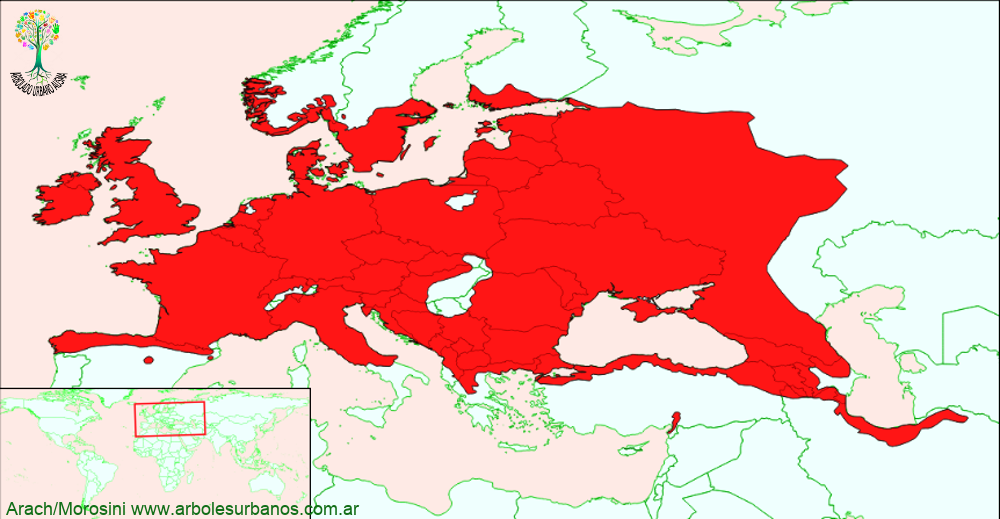

Click en las imágenes para ampliar

{kind=link}
{kind=link}
{kind=link}
{kind=link}
{kind=link}
- NOMBRE CIENTÍFICO
- Fraxinus excelsior
- FAMILIA BOTÁNICA
- Oleáceas
- DESCRIPCIÓN GENERAL
- Es un árbol que alcanza por lo común, entre 25 y 30 metros de altura, auque existen ejemplares que superan los 45 metros y los 2 metros de diámetro a la altura del pecho. Posee una copa esférica o extendida. Tiene una corteza gris y lisa en su juventud, cuando madura es oscura y fisurada longitudinalmente. Sus hojas están dispuestas de forma opuesta, son compuestas imparipinadas, de entre 9 a 13 folíolos que son de forma lanceolada y de borde irregularmente dentado, de color verde oscuro, luego en otoño se tornan amarillas y ocres antes de caer.
- FLORES
- Las flores están separadas por sexos, en distintas plantas o en la misma. Son muy pequeñas y sin pétalos, aparecen a principios de la primavera antes que las hojas. Están reunidas en racimos.
- FRUTOS
- Maduran a principios del otoño, son sámaras oblongo-lanceoladas de color verde claro, reunidas en ramilletes que pueden permanecer durante todo el invierno en la planta.
- ORIGEN
- Tiene una amplia zona de distribución natural que incluye casi todo el continente europeo, menos en el sur de la península ibérica y el note de la península escandinava, habita las Islas Británicas, centro de Europa, hasta medio oriente y Asia menor.
- USOS
- Su madera tiene una albura de color, que varía desde el blanco cremoso al marrón claro, mientras que su duramen de color marrón verdoso. Es de grano grueso fuerte y resistente, utilizada para los más diversos usos desde postes, mangos de hachas, arcos, hasta mobiliarios y construcción de viviendas. En arbolado se lo utiliza formando grupos o bien como árbol de alineación
- REPRODUCCIÓN
- Se lo multiplica por semillas que deben ser estratificadas durante 90 días. Las variedades se multiplican por injerto
- PARTICULARIDADES
- existen muchas variedades de esta especie,, una llamada “Jaspídea” tiene los brotes amarillo intensos y yemas negras, se lo puede apreciar en la esquina de la Municipalidad de San martín de los Andes
Fresno europeo